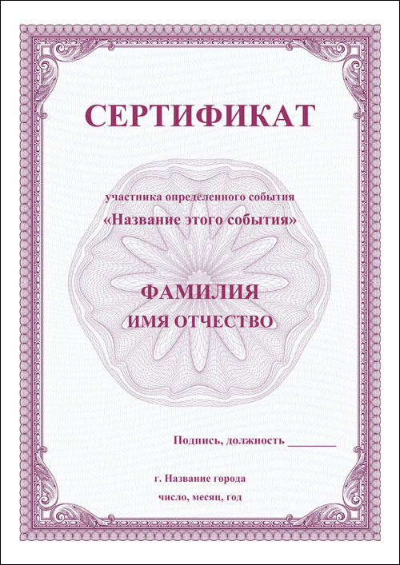

Центр развития и дополнительного образования детей и взрослых
О НАС

Центр развития и дополнительного образования детей и взрослых
Предоставляем образовательные услуги по дополнительным общеразвивающим и профессиональным программам (повышение квалификации) на возмездной основе:
- иностранные языки (английский, немецкий, французский, испанский, итальянский, португальский)
- ментальная арифметика
- скорочтение
- подготовка в ОГЭ и ЕГЭ (иностранные языки, информатика; краткосрочные (12 ак.ч.) – русский язык, литература)
- программирование на платформе «1С: Предприятие.8» + английский для IT-специалистов
Преподаватели – ведущие преподаватели Курганского госуниверситета. Ценовая политика - умеренная
Почему выбирают нас
Богатый опыт
Доступные цены
Современные методы и приемы обучения
Эффективные программы обучения
Немного цифр
10 лет на рынке
На рынке образовательных услуг по дополнительным образовательным программам для взрослых
5 лет на рынке
На рынке образовательных услуг по дополнительным образовательным программам для детей и школьников
Преподаватели
Ведущие специалисты Курганского госуниверситета
ИНОСТРАННЫЕ ЯЗЫКИ
I LOVE ENGLISH Начальный этап обучения – 0 ступень (дети 3-4 лет)
I CAN SING (GAMES) – уникальный курс, позволяющей в музыкально-игровой форме приобщить малыша к миру
английского языка уже с 3-4 лет и научить воспринимать английскую речь на слух, а 5-6 леток подготовить к
более серьезным занятиям по английскому языку. На занятиях мы слушаем веселые песенки, знакомимся с интересными
гостями, играем и поем по-английски.
✖
I LOVE ENGLISH Начальный этап обучения – 0 ступень (дети 3-4 лет)
I CAN SING (GAMES) – уникальный курс, позволяющей в музыкально-игровой форме приобщить
малыша к миру английского языка уже с 3-4 лет и научить воспринимать английскую речь на слух,
а 5-6 леток подготовить к более серьезным занятиям по английскому языку. На занятиях мы слушаем
веселые песенки, знакомимся с интересными гостями, играем и поем по-английски. Очень быстрый результат
обучения, эффект заметен уже после нескольких занятий. Аудиодиск записан носителями языка.
Цель: обучение основам английских речевых и грамматических структур, правильному произношению через
ежедневное прослушивание (дома и на занятиях) и пропевание специально подобранных рифмовок, положенных на английские мелодии.
Результат: дети приобретают навыки правильного произношения, участвуют в диалогах, используя основные структуры английского языка.
Начальный этап обучения – 0 ступень (дети 4-5 лет)
I CAN SING (MUSICALS) Курс предназначен для 4-7 летних детей каждый ребенок может попробовать себя и в роли звезды мюзикла.
Настоящий музыкальный спектакль на английском станет гордостью детей и родителей.
✖
Начальный этап обучения – 0 ступень (дети 4-5 лет)
I CAN SING (MUSICALS) Курс предназначен для 4-7 летних детей и является логическим продолжением
(это второй год обучения) курса I can sing games (первый год обучения). Теперь каждый ребенок может
попробовать себя и в роли звезды мюзикла. Настоящий музыкальный спектакль на английском станет гордостью
детей и родителей.
Цель: развитие речевых умений, полученных при обучении по 1-ой части 0 ступени I can sing. Games,
продолжение обучения основам английских речевых и грамматических структур, правильному произношению
через ежедневное прослушивание и пропевание специально подобранных рифмовок, положенных на английские мелодии.
Результат: дети приобретают навыки правильного произношения, участвуют в диалогах, используя основные
структуры английского языка. Играют и поют на английском языке. С детьми можно поставить на сцене мюзиклы, сценарии которых
представляет материал данного учебного пособия.
I LOVE ENGLISH 1 ступень обучения (5-7 лет)
I CAN SPEAK 15 аудиоуроков на диске, записанных с участием носителей языка, помогут ребенку погрузиться
в мир живой английской речи. Каждый урок - уникальная история с захватывающим сюжетом, которую малыш
будет с радостью слушать еще и еще… пока однажды не обнаружится, что он умеет говорить по-английски.
✖
I LOVE ENGLISH 1 ступень обучения (5-7 лет)
I CAN SPEAK 15 аудиоуроков на диске, записанных с участием носителей языка, помогут ребенку погрузиться
в мир живой английской речи. Каждый урок - уникальная история с захватывающим сюжетом, которую малыш будет
с радостью слушать еще и еще… пока однажды не обнаружится, что он умеет говорить по-английски. Иллюстрации к
аудиоурокам - материал для выполнения заданий аудиокурса. Подготовка к цветочтению. Игровые задания на
материале знакомой лексики. Дети получают первые навыки чтения и письма на английском языке. Простые
игровые задания дают детям представление о графическом образе английских слов и фраз и готовят ребёнка к
чтению и письму на английском языке. Дети читают слова сразу, без выделения отдельных букв, догадываясь о
значении графического изображения, выполняя несложные игровые упражнения.
Слушая диск ежедневно всего по 10-15 мин, ребенок без помощи родителей совершенно самостоятельно усвоит за год такой объем
разговорного английского, на котором он будет общаться со сверстниками (как в классе, так и с носителями языка, н-р, во время
путешествий) и который обеспечит ему ту минимальную базу разговорного языка, которая обеспечит ему дальнейшее развитие и прочную
основу на будущее - он уже никогда не забудет английский язык и во взрослой жизни ему будет намного легче совершенствовать его и
использовать при необходимости, а все потому, что по данной методике (особенно, если ребенок изучает язык в группе) он усваивает
язык естественно, как второй родной - в живой речи и в игре!
I LOVE ENGLISH 2 ступень обучения (6-8 лет)
I CAN READ 14 аудиоуроков-приключений в компании волшебника Мерлина, принцессы Элайзы, дядюшки
Макдоналда и других персонажей. Вместе с ними ребенок незаметно и естественно продвигается вглубь
грамматики английского языка, осваивает новые лексические единицы, речевые обороты, устные темы.
✖
I LOVE ENGLISH 2 ступень обучения (6-8 лет)
I CAN READ 14 аудиоуроков-приключений в компании волшебника Мерлина, принцессы Элайзы,
дядюшки Макдоналда и других персонажей. Вместе с ними ребенок незаметно и естественно
продвигается вглубь грамматики английского языка, осваивает новые лексические единицы,
речевые обороты, устные темы. В книге с иллюстрациями его ждут встречи как с уже знакомыми,
так и с новыми занимательными персонажами. «Цветочтение»
Благодаря уникальной авторской методике обучения чтению на английском языке дети начинают
читать уже с первых страниц Рабочей тетради. В течение 42 мини-уроков они учатся функциональному
чтению, выполняют задания на понимание прочитанного, а также прописывают английские буквы и слова.
Никакой зубрежки, никакой транскрипции. Дети просто начинают читать, при этом понимая смысл прочитанного.
Чтение здесь – не самоцель, а всего лишь повод решить занимательные кроссворды, отгадать логические
загадки, справиться с «текстом на полминутки». Весь лексико-грамматический материал полностью соотносится
с материалом аудиокурса.
I LOVE ENGLISH 3 ступень обучения (7-9 лет)
I CAN WRITE / FOREST SCHOOL Весь курс-театр, а дети в нем – актеры. Учитель играет роль режиссера,
а дети играют выбранные роли. Роли нужны для снятия барьера: когда ребенок играет не себя, он может позволить
себе ошибки, ляпы, за ролью можно спрятаться, как за маской.
✖
I LOVE ENGLISH 3 ступень обучения (7-9 лет)
I CAN WRITE / FOREST SCHOOL На уроках создается сказочная атмосфера. Весь курс-театр, а дети в нем – актеры. Учитель играет роль режиссера, а дети играют выбранные роли. Роли нужны для снятия барьера: когда ребенок играет не себя, он может позволить себе ошибки, ляпы, за ролью можно спрятаться, как за маской.
Действие происходит в чудесном лесу, где все звери живут вместе. Каждый зверь обладает своим характером (например, еж вежливый, пунктуальный, но зануда; волк – хулиган, постоянно всех задирает, провоцирует, что-то отнимает у всех; енот - очень умная, но высокомерная, хвастается все время; заяц трусливый, но проявляет храбрость) Каждый герой должен будет преодолеть свои отрицательные качества и развить положительные. Посредством английского языка дети смогут проявить свои актерские способности, лидерские качества, креативность.
Курс состоит из 6 юнитов, которые представляют собой иллюстрации к соответствующим аудиоурокам. Эффективность усвоения материала напрямую связана с регулярностью прослушивания аудиоуроков. Поэтому ежедневное прослушивание урока (желательно перед сном) является первым условием для достижения желаемого результата. Часть работы по Рабочей тетради будет проходить в классе на уроке, а часть ребенку необходимо будет выполнить самостоятельно. Одновременно с прослушиванием каждого аудиоурока дети проходят с учителем 8-10 реальных уроков.
I LOVE ENGLISH 4 ступень обучения (8-10 лет)
I CAN ANALYSE С помощью нового героя - учительницы мисс Лорейн, ребенок постигает большое количество новых грамматических структур, знакомится с парадигмой временных форм английского языка. английском языке и дальнейшее развитие навыков аудирования, говорения и чтения, и письма
✖
I LOVE ENGLISH 4 ступень обучения (8-10 лет)
I CAN ANALYSE С помощью нового героя - учительницы мисс Лорейн, ребенок постигает большое количество новых грамматических структур, знакомится с парадигмой временных форм английского языка. Рабочая тетрадь с иллюстрациями и упражнениями предназначена для формирования у детей основ письменной английской речи.
Целью учебного процесса является обучение аналитическому мышлению на английском языке и дальнейшее развитие навыков аудирования, говорения и чтения, и письма, приобретенных в результате работы по 1, 2 и 3 ступеням (I CAN SPEAK, I CAN READ, I CAN WRITE) методики “I LOVE ENGLISH”.
Основными принципами обучения на данном этапе являются:
- введение нового материала через уже сформированные навыки аудирования и говорения;
- повторение пройденного материала через домашнее чтение;
- формирование навыка анализа материала на хорошо знакомом материале.
Результат обучения – ребенок всесторонне развит, любит учиться, не боится английского языка и легко усваивает его. Подготовлена надежная база для дальнейшей работы, направленной на успешную реализацию приобретенных языковых и речевых навыков в жизни (и на получение отличных результатов на экзаменах ОГЭ и ЕГЭ!)
Курсы
ИНОСТРАННЫЕ ЯЗЫКИ
Иностранный язык (английский, немецкий, французский) для взрослых
-курс 72 академических часа, 2 раза в неделю по 3 академ.часа (120 минут)
-продолжительность 3 месяца стоимость 3 000 руб. в месяц
-занятия в группе от 6 человек ведут преподаватели Курганского госуниверситета
Иностранный язык (английский, немецкий, французский) для взрослых
-курс 72 академических часа, 2 раза в неделю по 3 академ.часа (120 минут)
-продолжительность 3 месяца стоимость 3 000 руб. в месяц
✖
ИНОСТРАННЫЕ ЯЗЫКИ
Иностранный язык (английский, немецкий, французский) для взрослых
-курс 72 академических часа, 2 раза в неделю по 3 академ.часа (120 минут)
-продолжительность 3 месяца стоимость 3 000 руб. в месяц
-занятия в группе от 6 человек ведут преподаватели Курганского госуниверситета
Английский язык для взрослых – уникальная методика интенсивного обучения Г.А.Китайгородской и Т.Н. Игнатовой – уникальный курс, доступный только у нас!
-Курс 156 академ.часов
-продолжительность курса 4,5 - 5 месяцев
-занятия проводятся минимум 2 раза в неделю по 4 академ.часа (с 18-00 до 21-00)
-стоимость 4500 в месяц (*4 месяца=18000 рублей за курс)
Иностранный (английский, немецкий, французский) язык для школьников
Занятия ведут преподаватели Курганского госуниверситета!
-Обучение в группе от 6 человек.
-Курс - 108 академ.часов
-Занятия проводятся 2 раза в неделю по 60 минут (1,5 академ.часа)
-стоимость 1750 рублей в месяц
ПРОГРАММИРОВАНИЕ
Курсы программирования для школьников 10-16 лет — увлекательно и полезно!
-Основы программирования в системе 1С:Предприятие 8 для школьников
-Основы программирования на языке Java
-Современная web-разработка
Алгоритмы. Олимпиадное программирование
Другие преподаваемые языки программирования:
✖
Алгоритмы. Олимпиадное программирование для школьников
Продолжительность: 2 года, 1 раз в неделю (сентябрь-май)
По сути, это "соль" программирования, задачи сортировки, поиска, обхода "дерева", "рюкзак", "коммивояжер" и т.п.
Курс рассчитан на 2-х летний цикл обучения.
Каждый модуль курса рассчитан на полугодие, 1 занятие по два урока в неделю (1,5 астрономических часа).
Курс рекомендован учащимся 9–10-х классов, которые обладают базовыми знаниями по программированию в объеме любого из курсов: "Основы программирования на Java" или "Основы программирования в 1С:Предприятие 8".
На курсе:
Вы узнаете, что такое олимпиадное программирование, и в чем заключаются особенности автоматической проверки алгоритмов.
Познакомитесь с тестирующей системой Ejudge, в которой проходят все крупнейшие соревнования по спортивному программированию.
Сможете на лету решать основные задачи из области арифметики: разложение числа на цифры, на простые множители, делимость, арифметика остатков.
Освоите классические алгоритмы и хитрые трюки для решения задач на обработку последовательностей.
Узнаете, как легко решать задачи обработки матриц: линейный поиск, переворот, максимумы и минимумы.
Изучите различные методы сортировки, в том числе использующие тонкие оптимизации.
Приступите к основам высшего пилотажа в программировании – алгоритмам обработки графов, стеков и очередей.
Полученных знаний и навыков хватит, чтобы начать выступать на олимпиадах по программированию.
Занятие №1. Знакомство
Алгоритмы
Тестирующая система
Занятие №2. Типы данных и отладка
Типы данных в Java
Примитивные типы
Объекты
Классы-обертки
BigInteger и BigDecimal
Отладка
Занятие №3. Решение задач из области арифметики
Проверка на четность
Немного теории
Цифры числа
Получение цифр числа
Проверка на простоту
Сумма делителей
Количество делителей
Разложение на простые множители
Занятие №4. НОД(GCD) и НОК(LCM)
Немного теории
Немного о задачах
Занятие №5. Однопроходные алгоритмы
Чтение
Сумма элементов
Максимум из всех
Максимум из четных
Второй максимум
Немного о задачах
Чтение больших объемов данных
Пример использования класса StreamTokenizer для быстрого чтения
Последовательности чисел
Занятие №6. Массивы
Создание массива
Ввод (считывание) массива из N элементов
Вывод всех элементов массива
Поиск максимума
Поиск индекса максимального
Поиск индекса заданного числа в массиве
Вывод массива в обратном порядке
Косвенная адресация
Занятие №7. Сортировка массива
Сортировка выбором (метод минимума)
Немного теории
Метод сортировки обменами (метод пузырька)
МЕНТАЛЬНАЯ АРИФМЕТИКА
Новейший курс улучшения умственных способностей, созданный на основе системы устного счета. Основным
принципом ментальной арифметики является усиленная работа обоих полушарий головного мозга.
Данная методика обучения позволит детям быстрее усваивать новую
информацию, развить свой творческий потенциал, научиться решать сложные
математические задачи в уме, без использования калькулятора.
Основная цель – научить детей учиться, сформировать устойчивый интерес к процессу развития интеллектуальных
способностей (память, внимание, воображение, творческое и аналитическое мышление, наблюдательность, смекалка),
сформировать и развить у детей необходимые навыки самоорганизации и самообразования.
✖
МЕНТАЛЬНАЯ АРИФМЕТИКА
Новейший курс улучшения умственных способностей, созданный на основе системы устного счета. Основным принципом ментальной арифметики является усиленная работа обоих полушарий головного мозга. Данная методика обучения позволит детям быстрее усваивать новую информацию, развить свой творческий потенциал, научиться решать сложные математические задачи в уме, без использования калькулятора.
Основная цель – научить детей учиться, сформировать устойчивый интерес к процессу развития интеллектуальных способностей (память, внимание, воображение, творческое и аналитическое мышление, наблюдательность, смекалка), сформировать и развить у детей необходимые навыки самоорганизации и самообразования.
для дошкольников - подготовка к школе!
для младших школьников - шанс научиться мыслить нестандартно, развить все свои интеллектуальные способности!
Для родителей, которые хотят дать своим детям только лучшее!
Обучитесь методике преподавания ментальной арифметики и станьте для своего ребенка СУПЕР-учителем!
-курс 36 академ.часов
-1-2 месяца обучения (график по договоренности)
-стоимость курса 8000 рублей
СКОРОЧТЕНИЕ
Чтение – лекарство от глупости! Скорочтение (быстрочтение) в значительной степени способствует развитию
интеллекта в любом возрасте. Человек, обладающий этим навыком, читает несколько книг в неделю и усваивает
в разы больше информации. Со скорочтением, интеллект развивается без ограничений.
Скорочтение включает: скорость, понимание, и запоминание прочитанного. С таким навыком можно
быстро изучить интересующий предмет, область, специализацию, науку. Чем больше человек читает
полезной литературы, тем более образованным и интеллектуальным становится.
✖
СКОРОЧТЕНИЕ
Чтение – лекарство от глупости! Скорочтение (быстрочтение) в значительной степени способствует развитию
интеллекта в любом возрасте. Человек, обладающий этим навыком, читает несколько книг в неделю и усваивает
в разы больше информации. Со скорочтением, интеллект развивается без ограничений.
Скорочтение включает: скорость, понимание, и запоминание прочитанного. С таким навыком можно
быстро изучить интересующий предмет, область, специализацию, науку. Чем больше человек читает
полезной литературы, тем более образованным и интеллектуальным становится.
Применяемые в процессе обучения приемы (эйдетика и мнемотехника) позволяют в корне пересмотреть сам подход
к восприятию информации.
Когда запоминание текстов производится на основе ассоциативных образов, удается не только облегчить
сам процесс восприятия информации, но и многократно повысить тот объем сведений, с которым мозг
сможет в последствии работать. Ставшие неимоверно популярными мнемотехники в полной мере
используют особенности развития памяти человека. Доказано, что пробудить восприятие субъективных образов реально не только у детей, но и у взрослых!
Методы развития памяти и внимания хорошо подходят для людей с проблемами концентрации внимания,
при депрессиях, для пожилых людей с различными нарушениями, а так же для людей с начальной
стадией болезни Альцгеймера.
курс - 72 академ.часа
3 месяца, 2 занятия в неделю по 120 минут (3 академ.часа)
стоимость 3000 в месяц


.png)
.png)